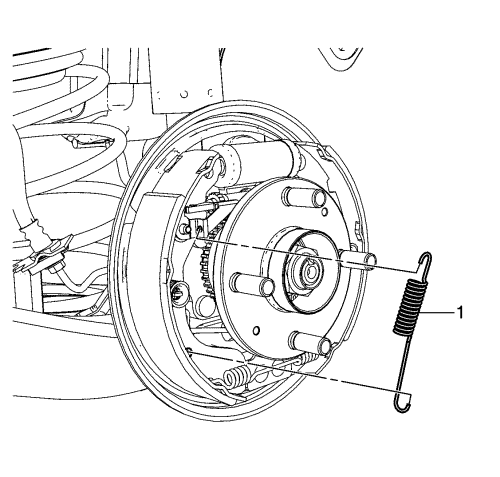
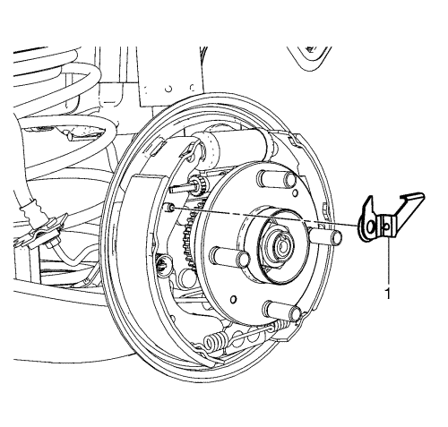
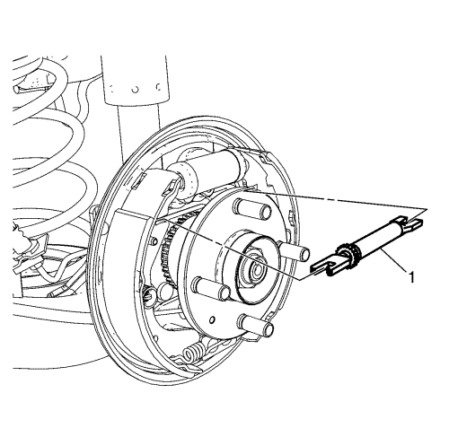
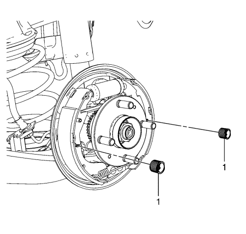
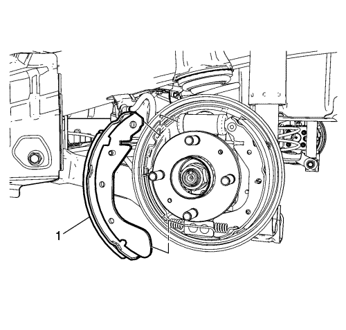
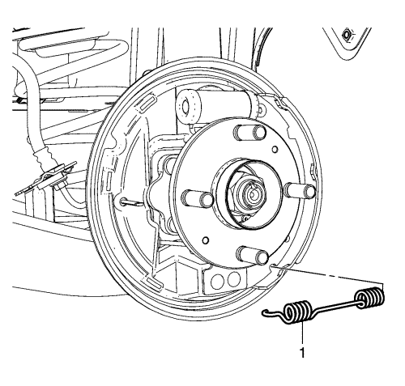

Desmonte la sujeción del muelle (1) y el muelle de retorno superior (2) de la zapata de freno.

Desmonte el muelle de la palanca del actuador del regulador del freno (1).

Desmonte la palanca del actuador del regulador del freno (1).

Separe ligeramente la parte superior de las zapatas de freno, y desmonte el regulador de las zapatas de freno (1).

Desmonte el muelle de sujeción de la zapata de freno y el conjunto de la copa (1), comprimiendo el muelle y girando el conjunto 1/4 de vuelta.
Desmonte los 2 muelles de sujeción y los pasadores del conjunto de la copa.

Gire la zapata de freno primaria (1) hacia el conjunto del cubo de rueda, y suelte la zapata de freno, del muelle de retorno inferior de la zapata de freno.

Desmonte el muelle de retorno inferior de la zapata de freno (1).
Monte el muelle de retorno inferior de la zapata de freno (1).
Coloque la zapata de freno primario (1) en el plato portafrenos del freno de tambor y conecte la zapata de freno al muelle de retorno inferior de la zapata de freno.
Monte los 2 muelles de sujeción y los pasadores del conjunto de la copa.
Monte el muelle de sujeción de la zapata de freno y el conjunto de la copa (1), comprimiendo el muelle y girando el conjunto 1/4 de vuelta.
Separe ligeramente la parte superior de las zapatas de freno, y monte el regulador de las zapatas de freno (1).
Monte la palanca del actuador del regulador del freno (1).
Monte el muelle de la palanca del actuador del regulador del freno (1).
Monte la sujeción del muelle (1) y el muelle de retorno superior de la zapata de freno (2).